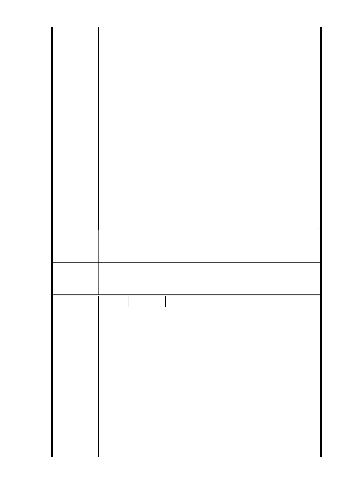

敬請臺北市政府給予三個月時問進行整合。
以上建議具建設性解決松臺公寓五十多年之加強磚
造四樓無電梯無消防巷道殘破不堪危屋唯一合情合
理合法的可行方案，松臺公寓里長、地主、住戶業
經長時間溝通協商，基於四、五十年相鄰情誼，相
互忍讓尊重及彼此體諒，認為天賜良機不能再錯
失，己獲大多數住民認同，恭請臺北市政府公告文
件給予三個月時間俾便進行整合，成功公算可期。
3.臺北市政府相關單位：都市發展局、都市計畫委員
會及捷運局均函復松臺公寓地主代表所陳情意見納
入都市計畫委員會大會審查參考，恭請市長暨各位
長官、都市計畫委員會委員重視松臺公寓 135 戶住
民 360 多人未來生存與生活幸福之所寄，松臺公寓
住戶初期有眷無舍，購址申請眷貸，全部是為國奉
獻一生的退伍軍人、榮眷及榮民子弟，該房地為其
唯一財產，殷切期盼諸君以市民居家安全為念，大
仁大德賜予協助，兩全其美創造雙贏，圓滿完成重
大建設為檮。
建議辦法
市府回應
意見
同編號 16-1 研析意見。
委員會決
議
一、R04 站北側捷一用地，採設置捷運必要設施出入口最小
用地面積 510 ㎡之替代方案取得用地，並辦理土地開發。
二、同「市府回應意見」。
編 號 16-3 陳情人 鍾志成（R04）
臺北市都市計畫委員會大會補充報告資料
臺北市捷運信義線東延段 R4 站用地松臺公寓陳情申請市
政府給予三個月整合時間，以達成兩全其美共創雙贏之
佳績。
一、三個月期限給予地主及住戶明確期限之壓力，自應儘快
整合謀求最佳之決定，時間稍縱即逝，不容地主及住戶
陳情理由
再猶豫觀望蹉跎！
二、實施者（未定）與無產權住戶簽訂合約同意與捷運共構
開發，給予每戶房屋 20 坪及一個汽車車位的利益分享。
曾經里長主持協調討論多時，已獲地主及住戶 60％以上
認同，仍有待進一步努力與市政府協助應即可大功告成。
三、松臺公寓五十多年一直無法解決複雜產權紛爭，不可能
完全公平合法，只能道德訴求，冀望心存善念而相互忍
讓犧牲，徹底解決目前產權紛擾之困境，共謀大家最大
- 65 -